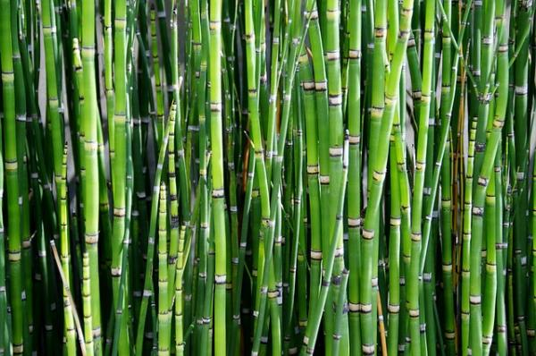
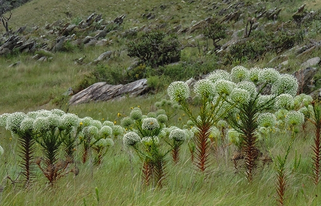
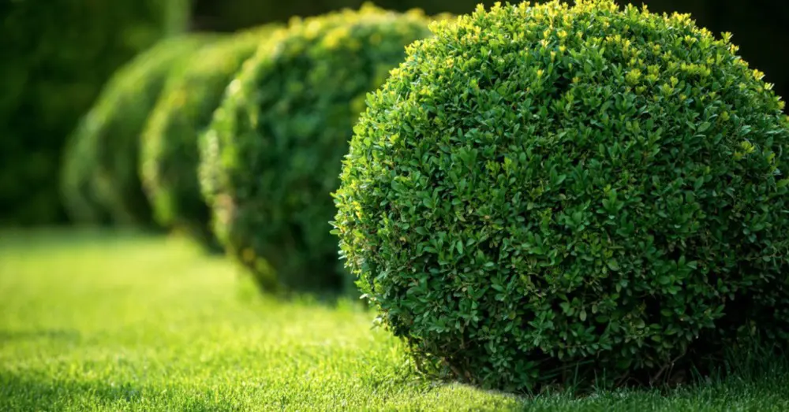
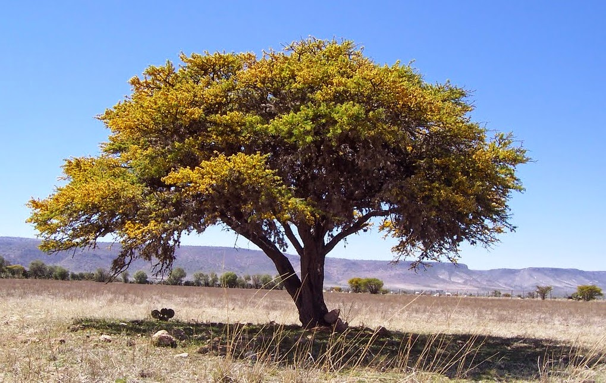

¿Qué tipos de plantas hay?
El reino Plantae, conformado por las plantas terrestres y las algas, es uno de los más numerosos. De hecho,
los científicos estiman que abarca más de 350.000 especies.
Las plantas son seres vivos pluricelulares,
formados por células
eucariotas vegetales , y son autótrofas
(producen su propio alimento, a través de la fotosíntesis). Pero, al margen de estas características
comunes, son muy variadas.
¿Cómo se puede hacer una clasificación de las plantas? Es posible utilizar distintos criterios y, en función
de estos, habrá diferentes clasificaciones. Así, se pueden distinguir por su duración, su tamaño, los
cuidados que precise, su ciclo reproductivo… su tamaño, la duración de su ciclo vital, sus características
biológicas, los cuidados que requiere…
Clases de plantas por tamaños
Según el tamaño de la planta se suelen clasificar en cuatro grupos:
- Herbáceas
- Matorrales
- Arbustos
- Árboles
Sus tallos son muy finos y flexibles, y su duración es corta. A pesar de ello, tienen una gran capacidad de adaptación por lo que son plantas que están muy extendidas.
Su tallo es leñoso, pero de escasa altura (no supera 1 metro). Viven varias temporadas.
De tallo leñoso, cuentan con múltiples raíces y son más altas que los matorrales. Se ramifican desde la base, y suelen ser perennes.
Tiene un tronco leñoso y de gran altura, que se ramifica cuando ya tiene cierta elevación. Su ciclo vital es largo, y pueden llegar a vivir varios siglos.
Variedades de plantas por duración
En general, existen tres tipos de plantas según su duración: anuales, bianuales y perennes. A continuación se detallan sus características.
- Anuales
- Bianuales o bienales
- Perennes
Son las plantas que viven solo durante una temporada. Su ciclo vital es muy veloz: en general nacen, se desarrollan y florecen durante la primavera y el verano, producen sus frutos a finales de la época estival o ya en otoño y, en esta misma estación o en invierno, mueren. Se caracterizan por liberar muchas semillas para garantizar su supervivencia. Entre las plantas anuales se encuentran no solo plantas de jardín (como el alhelí, la amapola, la alegría del hogar y la petunia, entre tantas otras), sino también verduras y hortalizas (judías, guisantes, lentejas, girasol) y hierbas silvestres. Incluso la maleza y las llamadas «malas hierbas» entran dentro de esta categoría.
Como su nombre indica, viven durante dos temporadas: dedican la primera a crecer y desarrollarse, y en la segunda aparecen las flores y después los frutos. También en este grupo hay plantas florales (pensamiento, minutisa) y alimentos (espinaca, zanahoria, perejil), pero es el menos numeroso. Hay algunas especies que, en función del clima, son bianuales (si están en una región en la que sufren heladas o nevadas) o perennes (en climas más cálidos).
Se llaman perennes o vivaces las plantas que viven más de dos temporadas. Si bien esta denominación se emplea para plantas y arbustos pequeños, también los arbustos más grandes y los árboles forman parte de este conjunto. En general, son especies resistentes, con buena capacidad para resistir los climas adversos.